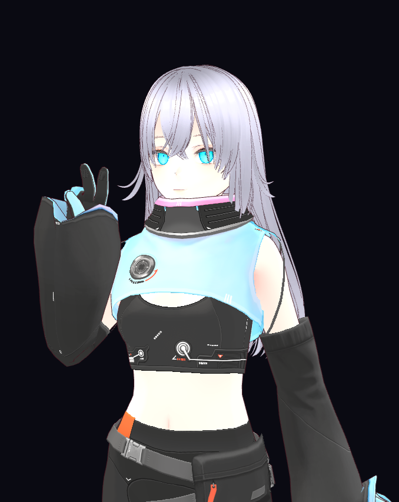

OpenRouter、Anthropic、Google、Microsoft、DeepSeek など幅広い AI プロバイダーに対応。`--provider` フラグまたは config / 環境変数で切り替えます。
`hermes_cli/providers.py` の `HERMES_OVERLAYS` で 31 の provider が定義されている。
50 以上のエイリアスが `ALIASES` 辞書に定義されている。
Provider 解決優先順位: `--provider` > config.yaml > `HERMES_INFERENCE_PROVIDER` > `auto`。
31 の provider overlay と 50 以上のエイリアスがあり、`--provider` / config / 環境変数 / `auto` の優先順位で解決します。
`hermes_cli/providers.py` の `HERMES_OVERLAYS` で 31 の provider が定義されています。